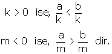
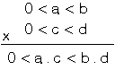

BASİT EŞİTSİZLİKLER
Bu ders notumuzda bir çok sınavda karşımıza çıkan Matematik Basit Eşitsizlikler konusunun geniş konu anlatımını, konun önemli yerlerini bulabilirsiniz.
Dersimizde basit eşitsizliği ele alacağız. Diğer derslerimizde eşitsizlikler konulu başlıkta devamını bulabilirsiniz. Basit eşitsizlikler aşağıdaki gibidir.İyi çalışmalar…
Reel sayıları “<” ya da “>” sembolleriyle yapılan karşılaştırmaya reel sayıların eşitsizlikleri denir.
> : Büyüktür.
< : Küçüktür.
³ : Büyük veya eşittir.
£ : Küçük veya eşittir.
A. REEL (GERÇEK) SAYI ARALIKLARI
1. Kapalı Aralık
a < b olsun.
a ve b sayıları ile bu sayıların arasındaki tüm reel (gerçek) sayıları kapsayan aralık
a £ x £ b, x Î R biçiminde gösterilir ve “a, b kapalı aralığı” diye okunur. Ve sayı doğrusu üzerinde yukarıdaki gibi gösterilir.
2. Açık Aralık ve Yarı Açık Aralık
a < x < b, x Î R ifadesine açık aralık denir. Ve sayı doğrusu üzerinde yukarıdaki gibi gösterilir.
a £ x < b ifadesi sayı doğrusu üzerinde yukarıdaki gibi gösterilir.
B. EŞİTSİZLİĞİN ÖZELİKLERİ
a < b ise
a + c <b+c ve
a – d < b-d dir
a <b
c > 0 ise, a . c <b.c
d < 0 ise, a . d >b.d
a2n+1 < b2n+1
(2n : Çift doğal sayıdır.)
(2n+1 : Tek doğal sayıdır.)

a ile b zıt işaretlidir.
a ile b aynı işaretlidir.